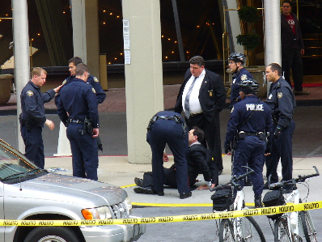

Wednesday, January 31, 2007
A GREAT USE OF THE WEB. There is so much bad news these days. Many of us feel an oppressing sense of dread. The internet, the largest library in the history of mankind, is also the most disorganized and dangerous one, a tool for tyrants and spies to track and trap the unwary. Using the 'net regularly exposes one to the potential of addiction.
Silver here. With all the bad news, it’s a very pleasant surprise to be reminded of some of the truly great things happening on the web.
One of the better uses of web technology is MIT's OpenCourseWare initiative. A truly world-class institution of science and engineering, MIT has taken a giant step by placing over 1400 course websites on the web, open to all, for free, under fairly generous terms of use.
Take a peek at 8.01. Physics I to non-MIT students; MIT's tradition of referring to courses, majors, buildings, and rooms by number can be disconcerting to the uninitiated. There are videos of the lectures (including some great demonstrations), assignments, answers, exams, the works. If Physics isn't your thing, there's 18.01 (Calculus), 6.071 (Introduction to Electronics) and about 400 more. There are 1400 OCW websites as many courses are posted more than once, by different faculty who teach them. MIT expects the number to double over the next two years. They even provide help in downloading the streaming video files so that those with low-bandwidth connections can see quality video.
[more]
Posted by Silver @ 05:14 AM CST [Link]
Tuesday, January 30, 2007
ON THIS DAY IN HISTORY an arrogant sovereign who believed God gave him the right to rule without interference from the people or their representatives was cut down to size.
Posted by Claire @ 01:54 PM CST [Link]
HOW DO YOU SPELL "IRAQ"? A spelling bee featuring contestants George W. Bush and Ron Paul.
(Found via the blog at LewRockwell.com.)
Posted by Claire @ 11:57 AM CST [Link]
MAYBE THERE'S HOPE FOR US YET. In the weeks since the Bushevik administration took its cheap shot at the law firms giving pro bono representation to Guantanamo POWs*, some very big U.S. corporations have struck back with statements that ring like a liberty bell. The linked article is not merely good news for the firms and the prisoners who have been denied their basic rights. It's chock full of heartening reminders that belief in due process is still strong in this land, despite the assertions of the vile usurpers currently occupying the US government.
* I keep wondering why everybody goes on calling them "detainees." Being "detained" is something you experience for a few minutes, maybe hours at most. Not five long years of isolation, waterboarding, force-feeding and even more unthinkable totalitarian abuse. These people are prisoners of war, albeit an illegal one. They're POWs even if the vast majority of them were never soldiers, and even if the Busheviks deny them both the protections of the Geneva convention and the Bill of Rights.
Posted by Claire @ 11:04 AM CST [Link]
Monday, January 29, 2007
This is just weird. Debra here. For some reason, I seem to be a lost-dog magnet.
This weekend we had dinner at a friend's house. As we stepped outside to leave, a dark shape darted away from the garbage bag it had been gnawing. "It was a Rottweiler!" said one of our party. Gasps heard all around, and the small children were quickly herded into the house. "He took off that way," said someone.
We grabbed a flashlight and shone it back and forth. Nothing. As we turned to go back into the house, the light reflected off the side of the house .... and the Rottweiler sitting right next to it, not ten feet away.
I've never been overly bright when it comes to dogs. I crouched down and began baby-talking to it. After a few tentative movements and submissive stances, the rottie inched closer to me. ("Not the face," I thought to myself. "Bite me anywhere but the face....")
Suddenly he bounded the last few steps toward me ... and began licking my face frantically. Everyone else started crowding around, and after a moment The Noob (as he's come to be known) began enthusiastically licking everyone.
The Noob's either 100% rottie or a rottie-German Shepherd mix, about 5 or 6 months old, 65lbs, and in decent shape. No collar though. We suspect he was dumped, but followed our Standard Operating Procedure: Take home, put up "found dog" signs all over town, wait a few days, contact a rescue group, find him a home.
We can't keep him because of our previously mentioned dogs -- especially the German Shepherd, who's a real jerk to everyone but our family (in fact, I have the Noob at the office with me right now to prevent him from being eaten). But oooooh, is he a sweetie pie. Can't get enough love.
He's also housebroken and good with other non-jerk dogs (my Aussie and he are now best buddies). He's intact, so his new owner will need to get him neutered.
Anybody need a dog?

Posted by Debra @ 09:45 AM CST [Link]
FAR FROM HARDYVILLE the game is afoot. Now we observe the karmic consequences as monkey-fu student Qwai Ching Paine touches the chaotic lives of the Carolina family.
Posted by Claire @ 08:29 AM CST [Link]
HEY, HEY, LOOK UP THERE AT THE TOP of your browser. Thanks to the talents of blogista Thunder, Wolfesblog now has its own favicon, just like the big boys. You'll see it to the left of the URL. Also in the tabs, if you're using tabbed browsing. Sure, it's just a little thing. But don't you think it adds a certain je ne sais quoi to the site?
Thunder's mini-rendition of our wolf-head logo (originally created by a mystery man from the past) should appear on every page of the blog if I implemented things correctly. Debra had to save me from myself a couple of times. After my most horrendous goof I promised her my firstborn dog in return for a tech bailout. But with her help I finally did the deed without destroying the blog in the process. I hope.
Posted by Claire @ 08:25 AM CST [Link]
A MAN WINS HIS CHILDHOOD DREAM. A trip into outer space. Then ... Uncle Sam, the Great Destroyer, comes along. In a very old-fashioned, earthbound way.
Posted by Claire @ 08:14 AM CST [Link]
Sunday, January 28, 2007

JIM BOVARD ATTENDED YESTERDAY'S BIG ANTI-WAR DEMONSTRATION and brought back the above politically incorrect statement. (Here's a link to the organization the woman is promoting.)
I'm actually more fond of this kindred protester:

... though I wonder why the Busheviks didn't arrest her as a "threat." (They're so very big on considering everybody a threat to The Glorious Leader.) And I must admit that devouring that particular Bush is a gag-inducing prospect.
Jim will be posting more photos to his site soon.
ADDED: And speaking of exactly the sort of thing the Busheviks consider a "threat," Jim just sent along this photo:

Wonder if gnomes in the Secret Service are, even as we speak, planning to move in on the demonstrator responsible for that one?
Posted by Claire @ 11:26 AM CST [Link]
SEVERAL TIMES A WEEK, SOME PIECE OF SCARY news makes me wonder if I should flee police-state America while it's still possible to get out without government permission. Then I'm reminded of how complex a decision that really is.
Last night I attended a fundraiser for a local woman who lost her home and her beloved dog in a fire. The hall was packed to the walls with people who'd paid $10 apiece to get a plate of spaghetti. The walls themselves were lined with auction donations from local businesses and individuals. As is usual around here, the cream of the community turned out. Old friends bid fiercely against each other, driving up the prices on live-auction items. My vet (with whom I attended the event) had donated a gift certificate for services. I went over to place my silent-auction bid on it -- vet services being something always needed in the Wolfe-dog household. But I discovered that the very first bid was for $50 -- the full price of the certificate. People are like that around here.
In one corner, there was a special table with a donation jar and four animal-related gift packages. Despite her own dire needs, the woman for whom the benefit was being held insisted that all proceeds from that table go not to her but to our animal-rescue group, in memory of her lost dog. People are like that around here, too. Even ones who are suffering and struggling still think about helping others.
So many things can bind us to a place. Family. Work. Inertia. Fear. History. Money is a big factor, considering leaving the country. But the ties can be so intricate, so multi-layered, so difficult to convey to anyone who isn't walking that mile in one's own moccasins. Being part of a community like this one -- where people help each other so freely and with such enthusiasm -- is a little miracle (especially for people like me who grew up rootless and unattached to the places we lived and the people who lived there). So I speculate often about getting out of this going-to-hell country. Then I think I'd have to be mad to leave a place like this, a place that embodies the essence of real, old-fashioned community, a place that is what America was at its best and ought to be again.
This is the America worth loyalty. So different from the pseudo-American miasma oozing out of Washington, DC. This is worth taking a stand for. This is worth defending against a million Busheviks, Clintonistas, and their spawn -- defending not so much by fighting as simply by living by these values. Living here amid such decency, it's hard even to believe that the evil emanating from DC is a real threat.
And I get an inkling of the complex reasons so many Jews stayed in Nazi Germany, right up to the very bitter end.
Posted by Claire @ 10:58 AM CST [Link]
Saturday, January 27, 2007
Another victim of the War on Drugs
Raving Reporter Thunder here.
I haven't blogged about this before, but I have spoken about it publicly on TCF. First, a little background. My step-mother has been battling stomach/colon cancer for about 2 years. She did the chemo thing and we thought she'd beaten it last August as tests came back clean. She eventually winds up back in the hospital and this time they tell her that there's nothing they can do except make her comfortable until she dies. The cancer is just too aggressive and chemo won't do a thing to stop it.
My step-mom is still with us, but is seemingly hanging on by a string. She had signed a DNR stating no nourishment (due to her pretty much having no stomach now and she can't keep anything down). She has had no food since December 27th, not even intravenously. Just saline to keep her hydrated.
I wish I could suggest medical marijuana to my step-mom to help both with pain cessation and to suppress the nausea, but she's been so brain-washed by the state, that she even told the doctor that she didn't want morphine because she was afraid she'd get addicted to it. He eventually convinced her to not worry about it, but how bad is the propaganda when a woman that has no chance of living past a couple months is afraid of becoming addicted?
Never thought I'd say it, but my step-mom is a victim of the War on Drugs.
Posted by Thunder @ 07:26 PM CST [Link]
Thursday, January 25, 2007
I have seen the future ... and it frightens me.
Debra here. This evening my husband the movie buff brought home the latest Luke Wilson movie, Idiocracy. Basic plot premise: perfectly average guy (so average, in fact, that I can't remember the character's name) is frozen for 500 years and emerges as the smartest man in a world of idiots .
The plotline and story are fairly predictable: spunky prostitute who learns the error of her ways, lazy underachiever who learns the error of his ways, lots of bathroom and crude sexual humor. This ain't Shakespeare.
The highlight of the movie -- in reality, the only reason to watch it -- is its absolute skewering of the dumbed-down American populace. [more]
Posted by Debra @ 08:41 PM CST [Link]
BRAD R., THE TECH HALF OF THE TEAM at McBlog, has created Goodbye Microsoft to help computer users wean themselves from the snooping, controlling, monopolistic, crashing, diseased (e.g. virus-laden) world of ... well, you know. Good going, Brad!
The site's still rough. One feature I'd seriously like to see is a n00b-oriented how-to (or maybe several of them) for installing and configuring a basic Linux setup. That is, instructions not just for installing one of the popular Linuxes like Ubuntu or Mandriva (the Linux flavor I use), but for getting a smooth-operating set of all the basic features W*s users have come to expect, including media players.
Media playing has always seemed to be Linux's biggest desktop-user weakness; well, that and those programs that allegedly install but then disappear into Nether Nerdland, requiring tech-geek skills to locate and use. My current version of Mandriva (2006) is the first Linux I've used that plays music and video (even in Microsoft formats) without driving me to consider entering a silent order of Linux users. So clearly there's hope.
With the arrival of W*s Vista, which by all accounts adds many Big Brother and Big Nanny features (and many developments that benefit media-industry associations at the expense of ... well, you know, the actual paying customers who buy the operating system), this is a good time for switching. Nice job, Brad. I look forward to seeing Goodbye Microsoft grow & help its share of emigrees escape from Gatesville.
Posted by Claire @ 02:50 PM CST [Link]
Tuesday, January 23, 2007
I swear I started this blog entry with pure intentions. But I got a little sidetracked. Then I got distracted. After that, I'm not sure what happened.
It's me, PSM. Hi. Seriously, I hope you're not reading this while you're waiting for your pop tart to toast. [more]
Posted by Penguinsscareme @ 01:06 PM CST [Link]
EXPECTED NEWS, BUT STILL WORTHY OF A SAD LITTLE SIGH. Today we lose yet another of our traditional freedoms: the ability to enter the U.S. without a passport after visiting Canada or Mexico. Land and sea travelers still have another year of that one little freedom. But if you fly, you've already lost.
BTW, the history of the passport isn't very savory. From Wikipedia on the history of passports:
[more]
Posted by Claire @ 12:46 PM CST [Link]
Monday, January 22, 2007
IF CANNABIS WERE LEGAL...
Blogispondent Ian here. I'm in the middle of taking a class on bartending, and I'm really rather surprised by the complexity of the subject. It's all about one single chemical - alcohol - but there are innumerable different variations. What plant matter was used to get the alcohol? What flavors can be added? How does color affect the drink? What is the proper glassware to serve something in? What is the appropriate garnish? What quality of booze should be used? How do different flavors interact? How to properly measure the volumes? How to best serve the drink? Are the ingredients mixed in proper order, so the different specific gravities work to mix the drink? And, of course, a bartender needs to be able to call all this information forward immediately for hundreds of different drinks. Can't make the customer wait, y'know!
Now imagine what society would demand if weed were legal. Your friendly (or surly) neighborhood bartender would be an expert on plant genetics, understanding which strains of cannabis produced which subtle effects, and how those subtleties interact with each other. What types of ignition sources are socially acceptable for which varieties (really, only an ignorant savage would light that with a wooded match!). What glassware should be used with each smoke (this type is best experienced through a water filter, while that one is particularly intended to be used in a basic pipe). What foods and drinks went best with which strains. How to pack the herb for ideal combustion. And so on...
There's a whole world of sophistication that will come to cannabis when it is eventually legalized. I, for one, look forward to it. It'll be fun to be a geneticist as well as a chemist.
Posted by Ian @ 04:29 PM CST [Link]
A NEW HARDYVILLE ADVENTURE BEGINS -- although this one takes place outside the boundaries of The Little Town that Tyranny Forgot. Experience the power of Monkey-Fu and learn how one family first hit the road to Hardyville.
Posted by Claire @ 01:47 PM CST [Link]
WANT TO BE HEALTHIER? Get a dog. (Sorry, cat people.)
Posted by Claire @ 10:04 AM CST [Link]
Sunday, January 21, 2007
I WAS JUST READING THAT MARVELOUS OLD NOVEL of resistance The Secret of Santa Vittoria. Came across this quote, which I think we can use in these bleak days:
The truth is this: If only one man among all of the rest will not break ... then all of them, all those who so despise men that they believe all men can be broken and all men can be bought, all of them have failed and all of them are defeated, because one alone destroys them and one alone can give heart to all other men.
The Secret of Santa Vittoria is about a Northern Italian hill village whose people conspire to hide their life's blood -- wine -- from a Nazi officer and his men who've been sent to confiscate it. Above all, it's a battle of wits between the ultra-confident, "racially superior" Nazi and the "Sicilian boob" Bombolini, whose philosophies are spelled out before the story even begins:
"In the long run, one life means nothing." -- Capt. Sepp von Prum"In the end, nothing is more important than one life." -- Italo Bombolini
MGM made a movie of Secret with Anthony Quinn (perfect casting!) as Bombolini. Now, somebody's just got to persuade them to put it out on DVD ...
Posted by Claire @ 04:59 PM CST [Link]
Friday, January 19, 2007
IT'S EASY TO FORGET HOW NICE ORDINARY LIFE CAN BE. It's Friday evening. I got an email a couple of hours ago from an editor. He needed me to cut five paragraphs out of my latest article. And not that I should hurry or anything, but he'd already sent the publication off to the printer and would email the printer my new copy as soon as he received it.
Nothing like a little pressure.
[more]
Posted by Claire @ 08:06 PM CST [Link]
IF THIS LAW PASSES, you can be sure I'll never criticize Congress on Wolfesblog. Not because I'm afraid they'll send me to jail, of course. But because I'd consider them beneath my criticism.
Hm. But come to think of it, they already are. So, Congress, no matter what any of us blogistas may say about you, know this: It's not a criticism. It might be a joke, a slam, a put down, a howl (of hilarity or rage), a satire, or a parody. But it's not a criticism. Nor is it an attempt to get citizens to lobby you to change your wicked ways. Criticism is worthwhile only when you believe something can be fixed. You're waaaaay past that.
(Ah. News is that the odious provision was booted out of Senate Bill 1. So we're allowed, lucky, lucky little people, to go on poking at Congress for the nonce -- unless the provision comes back in conference committee or stashed in some 4000-page must-pass appropriations bill later this year. Interesting, though, innit? The Dems were elected last November to stop the Iraq war. And what's their first priority ...? Yes, yet another bogus "ethical reform" bill. Smoke and mirrors, anyone?)
Posted by Claire @ 10:50 AM CST [Link]
OH GOOD. The Cory Maye Justice Fund now has a PayPal account. Just email your contributions to corymayejusticefund@gmail.com. That makes life easier ...
Posted by Claire @ 10:44 AM CST [Link]
Thursday, January 18, 2007
CORY MAYE'S JUSTICE FUND -- BALANCE = $0. So reports Radley Balko of The Agitator (the great hero in ensuring that Maye didn't rot forever on death row).
Maye doesn't need money for his legal defense. That's being done pro bono by another Maye-case hero, Bob Evans and the law firm of Covington and Burling. But he does need money to fund visits from his children and for such sanity-preserving items as pens, paper, envelopes, and stamps for letters.
I'll be sending $25 today. Got anything you can spare for this tragic victim of drug-war and SWAT-raid abuse?
The address is:
Cory Maye Justice Fund
c/o R.E. Evans
P.O. Box 636
Monticello, MS 39654
And Balko notes that if any donor has any doubt whether the money is being well-spent, Maye and Evans will provide a full accounting on request. (More info on Maye's plight is here. Read the blog entries from the bottom up if you don't already know the story.)
Posted by Claire @ 01:42 PM CST [Link]
Wednesday, January 17, 2007
Patton wrote that he felt a greater sense of kinship toward Rommel than toward his own chain of command. A number of Civil War generals expressed similar sentiments. I would never equate myself with the battle hardened Corps Commanders of history -- but then again...
Hi, it's me, PSM.
First, thanks to Thunder for finding this damning indictment of our government's true reasons for invading Iraq.
I'll try not to give away spoilers, but there are a couple things here that I want to mention. This exposition resonated with me far more deeply than all the conspiracy theories I've read elsewhere on the web, even my own beloved TCF. Yes, I'll admit, I'm not invulnerable to the siren's call of high production values and a subtle, foreboding instrumental accompaniment. But much more than that, it gave me an insight into WHY the populace fell for the ruse. [more]
Posted by Penguinsscareme @ 01:10 PM CST [Link]
ONE OF THOSE VOLUNTEER ATTORNEYS tells her story of trying to save her client's life at Guantanamo Bay, against all the machinations of the Bush administration.
Posted by Claire @ 10:04 AM CST [Link]
Tuesday, January 16, 2007
SEVERAL HEART-WARMING STORIES FROM THE DOGOSPHERE are reported by black lab Pepper Ann Delbarco. Kudos to all good dogs and their good humans, including Morrigan and Jeffersoniantoo.
(Heh. I thought I just coined a new term, dogosphere. But Google says I'm a latecomer to that particular coinage. Oh well, it's a good one, anyhow.)
Posted by Claire @ 11:11 AM CST [Link]
THIS IS THE POLICE! Hand over your Mercedes!
(Nod to The Agitator.)
Posted by Claire @ 09:52 AM CST [Link]
IS THE BUSH ADMINISTRATION MOTIVATED ONLY BY VINDICTIVENESS? According to this report, a Bush Defense Department official has stooped so low as to try to get corporations to pressure their law firms to quit also providing pro bono services to Guantanamo "detainees." (Here's a link with more info but no less fire.)
Those hapless detainees are already so overwhelmed by U.S. power, so tormented, so silenced, so crushed, so totally denied access to any semblance of due process that their plight touches the hearts of all decent people (and all who care about liberty). What can the administration hope to achieve by attempting to deny them even the minimal legal help they now have? And to do it in such a slithering, backhanded way?
Yes, the official in question was officially "rebuked." But does anybody reading this believe that it isn't Bush administration policy to use every dirty tactic to ensure that the most helpless prisoners are rendered even more helpless? It's what they've done time and again for five ghastly years. Charles Stimson delivered his message to corporations and the law firms that depend on their business. He was "rebuked" -- wink, wink, nod, nod. But the message -- the threat -- was indeed delivered.
Is this administration driven by anything other than a sort of sick, hazing, frat-boy type of macho -- a macho that considers social dominance to be the only goal, to be obtained at any price? The Busheviks remind me of bad-movie jocks using any form of brutality to put down nerds, even when the nerds represent not the slightest threat to their dominance. These people are sick. Fulfilling their own power cravings, they've ODed on ego.
Posted by Claire @ 09:27 AM CST [Link]
Monday, January 15, 2007
DO NOT BELIEVE THE PREVIOUS GOVERNMENT REPORT. The new government report (which is unshatterably Truthful, as was the previous report, of course, until it became doubleplus unTruthful) states that there are no spychips implanted in any Canadian coins. There never were any spychips implanted in any Canadian coins. There will never be any spychips planted in Canadian coins.
All reports to the contrary are the work of wreckers and saboteurs. Trust Your Leaders. Do not even imagine that nefarious forces would ever, at any time, place spychips in any cash or currency or passports or driver's licenses. Such claims are malicious propaganda from the enemies of Our Glorious People's Democracy and will not be heeded by Patriotic Citizens. You have been warned.
Posted by Claire @ 10:29 AM CST [Link]
HARDYVILLE OVERTHROWS ITS GOVERNMENT! Or rather, the new government violently overthrows itself.
This is the final episode of "The Coup." Next week: Discover the amazing powers of Monkey-Fu and learn how one Hardyville newcomer began her journey toward the little town just West of the middle of nowhere.
Extra thanks to Oliver, Joel, ZooT, the Rocket Scientist, and the creative minds of TCF for the series now ended.
Posted by Claire @ 09:15 AM CST [Link]
DO YOU SOMETIMES USE THE WORDS freedom and independence interchangeably? I do when I'm writing. Writers are always in search of ways to avoid clunkily repeating themselves, so we become dancers with connotation. I've often elided those two words. And sometimes that's fair and fine.
The second definition for independence on Dictionary.com is "freedom from the control, influence, support, aid, or the like, of others." (The first definition is useless, since it tries to define itself with itself, saying roughly "Independence is a state of independency.")
The second definition of freedom on Dictionary.com is "exemption from external control, interference, regulation, etc."
So there you go. The experts speak. Independence and freedom are the same.
But as I've been footing it to town and busing it around town these last four weeks, my own experience is making a division between those two words.
I am less independent now that I'm on foot. But I enjoy more freedom. [more]
Posted by Claire @ 09:07 AM CST [Link]
Saturday, January 13, 2007
MORE FROM THE "ICONIC MOMENTS IN THE DEVELOPMENT OF A POLICE STATE" ARCHIVE.
That grand old kick-ass lady, Jackie Juntti, just sent round a comparison of the travesty of a show trial just perpetrated upon Hollis Wayne Fincher and the plight of another militiaman in Washington state back in the 90s. She reminded readers of the kafkaesque fate of John Pitner, who was locked up for several years in the then-new federal detention center at SeaTac without even being sentenced. In both cases, the men were ardent critics of government. In both cases, they were jailed for one of the BATFE's purely technical offenses. In both case they were denied basic justice by the courts.
But Jackie also mentioned something I'd forgotten. At the time Pitner was locked away in the SeaTac detention center, the federal government was busily denying that there was any such thing as a detention center at SeaTac -- even as the building was going up, even as it was being staffed and prisoners were being moved in. Bulldogs like Jackie eventually had to force the feds to admit they were building a secret federal prison. Now we speak about the place openly, forgetting all that history. Then, it was hidden, as if in shame and fear. As if our masters didn't want the plebians to know their actions -- or their motives.
As I read Jackie's words this morning I had one of those moments of realization (increasingly frequent lately): Building a prison and lying about what you're doing is something that would simply never happen in a free country. A country that does that -- like a country that sanctions torture or wages constant wars of aggression -- is a country that's gone over the perilous line.
I almost called it an invisible line. But the tragic thing is, it's actually so visible. Or at least audible. When you hear about the secret prisons and the torture chambers, you know what kind of country you live in. These are the icons of the police state. They can be nothing else.
Posted by Claire @ 04:05 PM CST [Link]
HELP WOLFESBLOG BY BUYING ...
- Anything from Amazon.com (bookmark it!)
- Recommended books from Amazon.com
- Dave Duffy's book of essays, Can America Be Saved from Stupid People
Posted by Claire @ 11:13 AM CST [Link]
IT'S GOOD TO KNOW THAT THE BRITS aren't being entirely passive in the face of government encroachments. They may foolishly fail to resist DNA databases or ASBOs. But at least in one small town with a long history of dissent ...
The respectable looking lady at the tea shop in the Sussex market town of Lewes was an unlikely advocate of urban terrorism. "Everyone I know is secretly pleased about the attacks. No one would mind if every last one was blown to pieces," she confided in a hushed tone."If I knew who was carrying out the explosions I wouldn't tell the police. Good luck to them, I say," she added.
So what is the object of such passion and hatred in a town usually associated with literature, music, antiques, and good taste? It is the parking meter.
Posted by Claire @ 10:58 AM CST [Link]
YOU MAY HAVE SEEN YESTERDAY'S ABC 20/20 REPORT or read the related news story about Matt Bandy, the 16-year-old Arizona boy so hideously railroaded on child-porn charges.
He faced up to ninety years in prison for viewing (and possibly uploading) some porn pix -- despite the fact that the images found on the family computer were almost certainly the result of one of the 200+ "infections" plaguing the machine. The family's computer had been turned into a "zombie" by crackers. (Even if he had viewed or transmitted the images, of course, life in prison would be an appallingly absurd outcome.)
My friend Oliver Del Signore is the webmaster of the Justice4Matt website, which has more information about the family and the horrors inflicted on them. The site isn't actually seeking justice for Matt; he made a plea bargain to save himself and in the end was even mercifully spared the ghastly necessity of registering as a sex offender everywhere he went for the rest of his life. But it does seek to alert others to the danger of being ensnared between malicious hackers and prosecutors interested only in PR and conviction stats. (And need I mention, Windows software.)
What's so frightening is that something like this could happen to anybody. Matt Bandy was (and seemingly still is) an exemplary kid from a loving family. His father is a physician. The family is respectable and middle class. Nobody in the family had done anything to make themselves a target for a vengeful government. This witch-hunting madness simply swept down on them from the dark of one December morning with guns drawn. And as so often happens now, nobody from the government was interested in hearing anything that might disprove their fanatical beliefs or dispell their craving for power.
Matt and his family show a lot of courage in being willing to share their story as a warning to others. Consider the Justice4Matt site a worthy weekend read. I only regret that, while the Bandy family has been driven to make its agony public, the writer of the main article on the site disguises the names of the villains from the state who perpetrated this modern Inquisition. Such villains should be exposed and held 100 percent accountable for their actions.
Posted by Claire @ 10:29 AM CST [Link]
Friday, January 12, 2007
DAMN AND DOUBLE DAMN. According to David Codrea, the Fincher case may soon go to the jury with no defense argument.
Fincher's entire defense was the Second Amendment. The judge first said he'd allow consitutional arguments (rare, these days, in trial court). Then His Dubious Honor blatantly flip-flopped. (I'm not a conspiracy freak, but did somebody get to the man, or what?) Anyhow, Fincher is apparently being forbidden to use the only defense he has -- that the NFA is unconstitutional.
Updates at:
David Codrea's War on Guns blog
Paul W. Davis' Arkansas Militia Fincher-case page
Posted by Claire @ 10:55 AM CST [Link]
FOUR WEEKS ON FOOT HAVE DRIVEN HOME the gulf -- the glorious gulf, really -- between what the media imagines we care about and what we really do care about.
After a week-long media orgy over his death, flags still fly half-staff for Gerald Ford. But in all this time, I've never heard a single local so much as mention the man -- except in response to my few questions about whether anybody actually cares. Then our Deep National Mourning finds expression in shrugs, ironic head shakes, and contemptful grimaces.
Angel trumpets sound from every major media outlet. A woman has ascended to the Power and Glory of the Speakership. Halellujah, halellujah!
Again, not a single person I know has mentioned The Great Historic Event. [more]
Posted by Claire @ 08:40 AM CST [Link]
Wednesday, January 10, 2007
AND SO IT BEGINS ...
OTTAWA–They say money talks, and a new report suggests Canadian currency is indeed chatting, at least electronically, on behalf of shadowy spies.Canadian coins containing tiny transmitters have mysteriously turned up in the pockets of at least three American contractors who visited Canada, says a branch of the U.S. Defence Department.
Complete article here, but be forewarned: details are "classified."
(News transmitted without use of RFID chips by Katherine Albrecht.)
Posted by Claire @ 09:36 AM CST [Link]
DISARMING THE POLICE brings some peace to Tijuana.
(Thanks to the blog at LewRockwell.com.)
Posted by Claire @ 09:29 AM CST [Link]
FINCHER WILL BE ALLOWED to argue the Second Amendment in his trial (which begins today). This could get interesting ...
(Thanks ND for the newsfind.)
Posted by Claire @ 08:24 AM CST [Link]
Tuesday, January 9, 2007

MORE ON THIS WEEK'S BUST of that dangerous threat to civic order, a scholarly historian.
Can you count the number of cops in the picture, boys and girls? Seven? Well, maybe. But it looks as if the champion donut-gobbler in the center may also be one of those kindly and helpful protectors of our peace and liberty. No uniform, but that does appear to be a badge on his jacket. And look -- yellow police tape, too!
But of course, the crime totally justifies this show of governmental force. We must have an all-out war to end forever the deadly menace of jaywalkers!
Okay, sarcasm mode off.
The world heads for a collision course. On the one hand, the standard "hooray for the brutal cops" TV shows are to be joined this week by Armed and Famous, which puts tacky celebrities into uniform and sends them out to bust us lesser folk. (Although this may be the first time anyone's made a TV series out of it, it's not a new game. Shaquille O'Neal was recently caught lending entirely new meaning to the term "Shaq Attack".) But on the other, at least a few commentators in the mainstream media are finally starting to notice and object to all the overblown brutality.
Unfortunately, you and I know that the paramilitary power ascendency is terrifyingly well entrenched and perfectly serves the purposes of its real masters. (Who, I'm sure you good blog readers hardly need the hint, aren't you and me.) Anybody who thinks this military-style overkill began with 9-11 (as the above SF Chronicle commentator wishes to believe) hasn't been watching. It's had a long, long time to send down its roots. Anybody who thinks mere public indignation will end the overkill and the peacock-like displays of savagery doesn't know the real purpose of paramilitary policing.
Besides, the people like it. And why not? It makes waaay more interesting TV than the two polite cops of Dragnet ever did. And always remember, it's only being done to those other people. You know, the ones that are a different color or class or national origin from us and who therefore don't count.
Posted by Claire @ 10:06 AM CST [Link]
Monday, January 8, 2007
THINGS LIKE THIS DON'T HAPPEN IN FREE COUNTRIES. It doesn't matter that the abuse of this respected scholar -- for jaywalking! -- was perpetrated by local cops. This "throw 'em on the sidewalk and grind their face in the dirt" mentality is thoroughly entrenched in U.S. police culture.
Doesn't matter whether such bullying is fostered by federal paramilitary training, violent-cop TV shows and movies, recruiting practices that draw cops from the dregs of society, the poison of an unjust justice system, or what. It just has to stop.
(Found at McBlog.)
Posted by Claire @ 02:56 PM CST [Link]
OOOOH! TAKE A LOOK at the new Amazon.com bookstore Thunder just designed for Wolfesblog! It's a beauty. In one whirlwind afternoon of activity on Sunday, blogista Thunder completely replaced our clunky old books page with a shiny, colorful, quick-to-clickthrough Amazon aStore.
The new store is far easier to update, too. So we can add new books, DVDs, survival gear and other items without months of my procrastinations. (A thread for your recommendations is already on The Claire Files Forums.)
Any time you enter Amazon.com though any link on this site, Wolfesblog is credited and receives a small commission (starting at 4 percent) on anything you purchase during that visit. Costs you nothing. No privacy violations (since we never see who ordered, only a list of overall orders). Helps keep us blogging. But for sure, the aStore shopping experience is most fun way to begin an Amazon.com shop.
I liked what Dull'Hawk said at TCF. Instead of a generic Amazon.com link bookmarked in his browser, he has a Wolfesblog Amazon.com link (like this one directly to the aStore or this one to the main Amazon site) . Click -- and every time he enters Amazon he's cheering on Wolfesblog.
Posted by Claire @ 09:41 AM CST [Link]
SWATTED! Hardyville's ATF-reject cops finally show their real selves.
Posted by Claire @ 09:04 AM CST [Link]
Sunday, January 7, 2007
I GOT STRUCK BY A PREMISE FOR A STORY. A young woman's house is burglarized. Maybe she's even personally robbed and terrorized at gunpoint. But she doesn't know whether she dares report what happened because she got a glimpse of one of the thieves -- and recognized a local police officer.
Then I realized that premise wouldn't fly these days. Police don't need to join freelance criminal gangs to steal from you. They just give themselves an unknown "confidential informant," get a warrant, and descend on you with 10 or 30 of their buddies, fully armored. Defend yourself and you're dead. Either way, they take whatever they want. Now whether the individual officer profits as much, once the take is taken, is another matter. Maybe some steal from the evidence room, while more "honest" types "merely" get new squad cars, warrantless-detection toys, and kewl paramilitary training from the asset forfeiture divvy.
But either way, they don't have to take the risks of joining any other criminal gang than their own, these days. Sigh. There goes another great story idea ...
Posted by Claire @ 04:16 PM CST [Link]
BOREDOM WITH A CAPITAL B. We've been having a lot of the kind of weather you don't want to go out in. Today is one of those days. Now I feel the pangs (but also more promises) of being truckless. [more]
Posted by Claire @ 02:40 PM CST [Link]
Friday, January 5, 2007
A MISCELLANEOUS MORNING. The weather's the pits. My brain hasn't kicked in. Even the dogs don't want to stir off the bed. So, in the spirit of cold, rainy mornings everywhere, I offer some trivial pursuits.
[more]
Posted by Claire @ 11:26 AM CST [Link]
Thursday, January 4, 2007
SO. BUSH IS NOW USING HIS INFAMOUS SIGNING STATEMENTS not merely to say he won't enforce laws, but to make up new "laws" -- in this case, to give his agents the power to open mail without a warrant. But only in "exigent circumstances," of course. Hm. Do you s'pose Frat-Boy in Chief even knows what "exigent" means? Sure he does. The definition of "exigent" is "whenever the Decider feels like it."
These signing statements are fascinating. Never learned about 'em in civics class, did you? Never learned that the leader of a "democratic" country could just cancel laws or make new ones up: "Stroke of the pen, law of the land. Kinda cool," as Clintonista Paul Begala notoriously said. (Oh, and do you remember how much that remark upset those good "limited government" Republicans, back then?)
Anybody out there able to come up with any reasonable argument that this is not a form of dictatorship?
Posted by Claire @ 05:11 PM CST [Link]
Few things can clear my mind and set things right quite like splitting cordwood. It's me, PSM. Hi.
Today was a better day for working outside than we have a right to expect in New Hampshire in January, and splitting some logs was just what was needed for my mind, body, and woodstove. [more]
Posted by Penguinsscareme @ 02:53 PM CST [Link]
Police apologize to man after thinking catnip was cannabis
Raving Reporter Thunder here
It appears that 2 LAPD officers, upon leaving a convenience store (no word on the disposition of the doughnuts), saw what they thought was 5 lbs of cannabis in the back seat of a car.
Turned out to be catnip. And the owner of the car, Adrian Martinez, is the founder of DogCatRadio.com, a radio station that caters to pet lovers.
The guy is lucky he didn't wind up with his face in the pavement with a boot on his neck (or worse) as that seems to be the method of treatment for people who possess harmless plants. Ok, well.....there's still a boot on his neck in this case, but it's more figurative than literal and just as tyrannical.
Posted by Thunder @ 08:13 AM CST [Link]
Wednesday, January 3, 2007
OKAY, A FEW DAYS LATER THAN USUAL for this sort of thing. But news watchers might get a twisted smile out of Radley Balko's New Years "predictions."
Not to give anything away, but Balko has the key to becoming the most astutely and astonishingly accurate New Year's prognosticator of all time.
Posted by Claire @ 07:59 AM CST [Link]
Tuesday, January 2, 2007
THE SIGO CARD is a new option in pre-filled cards specially developed for Spanish-speaking immigrants. That is, for folks wary of the banking system or who might not have enough documentation to open a U.S. bank account.
But this part of the story was what I found intriguing:
Cardholders can send a second card to relatives abroad, who can then make withdrawals at a local A.T.M. Several workers said it cost $15 to send $300 to Mexico through Western Union. But with the Sigo card, the card’s sponsors say, it will cost about $4.50 — the fee for using the A.T.M. in Mexico.
Hm. A pre-filled account from which two people in two locations can draw. That presents interesting possibilities. The types of documentation required (or rather, the types NOT required) also open some possibilities. These cards aren't by any means anonymous. But much creative thinking and doing seems possible here.
Posted by Claire @ 08:29 AM CST [Link]
PUTTING SSNS ON TAX FORM MAILING LABELS. Ah yes, "We're from the government and we're here to help you."
And don't worry. Even if you're a non-citizen, the government can still "help" you. Buy a plane ticket with a credit card, for instance, or give your email address to the airline booking clerk, and federal agents can check to make sure you're not making any unpleasant purchases or corresponding with anybody it might frown on.
Isn't it wonderful we have the state (and the states) taking care of us so well? Just think; otherwise we might have anarchy!
Posted by Claire @ 08:23 AM CST [Link]
Monday, January 1, 2007
CONCEALMENT DOES NOT EQUAL COVER Blogispondent Ian here, with a link I found on Jim Rawles SurvivalBlog. It's video of a Marine Corps study on cover vs concealment. Basically, they tested plywood, brick, and concrete block walls against an assortment of standard weapons (9mm, .223, 7.62x38, .308, .50BMG, 40mm grenades, and hand grenades). Good info, and interesting to watch (at the end, they show footage from similar tests of SMAW rocket launchers and 30mm chain guns).
Posted by Ian @ 07:06 PM CST [Link]
CITIZENS OF HARDYVILLE, new and old alike, learn to cope with Hardyville's finest (you remember: those rejects from the ATF ...)
On a not-quite-related note: A stranger stumbled upon an old Hardyville column yesterday and sent Debra a curt note, "Is this for real? Or is it a take off on the Mark Twain story, 'The Man That Corrupted Hadleyburg'?" Ha. I should be so talented as to steal borrow from Mark Twain.
But Hadleyburg is a great old story. Long time favorite. Fun to read, and it gives a very fine little lesson about the perils of trying to achieve virtue by shutting out all option for vice. So, since we're in the midst of this extra, extra, extra long holiday weekend (and please be sure if you get Tuesday off to worship show your grateful respect for Our Departed Glorious Leader, Hero of Democracy and Savior of the Nation ... (uh, what was his name again?) ... oh yeah -- Gerald Ford), thought you might enjoy a nice little Mark Twain read.
So here it is: "The Man That Corrupted Hadleyburg". Enjoy!
Now I'm off to put some unwritten New Years resolutions into action. More later. And may you kick righteous butt in 2007.